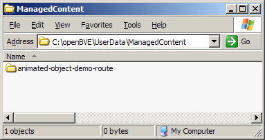
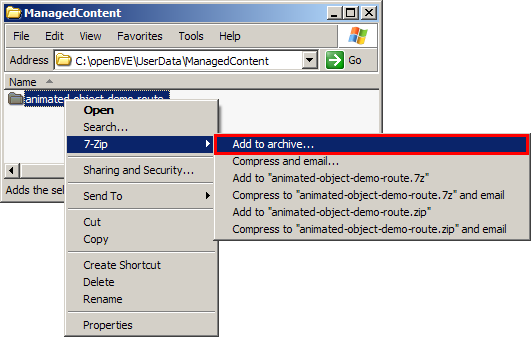
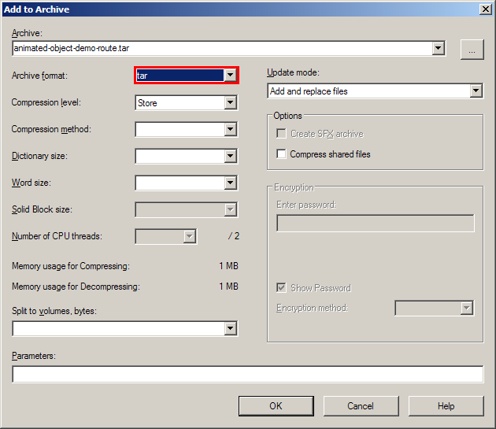
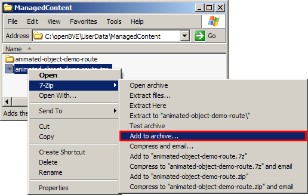
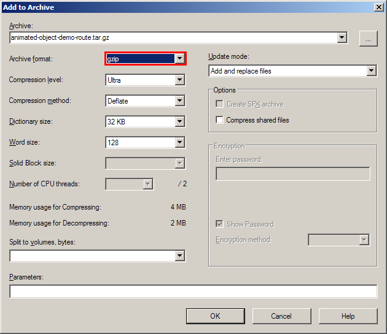
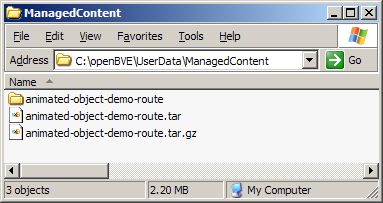

Managed add-ons - The basics of creating and distributing add-ons
Whether you already have created an add-on and want to port it to managed content, or if you want to create a new add-on as managed content from the start, this tutorial will show you the basics you need to know.
- Where are managed add-ons stored?
- Creating your first add-on
- Testing your first add-on locally
- Distributing your first add-on
- Testing your first add-on again
Where are managed add-ons stored?
First of all, you should find out where managed add-ons are stored. By default, openBVE stores managed add-ons in an operating-system-specific directory. Under Windows XP, this is C:\Documents and Settings\USER\Application Data\openBVE\ManagedContent. For other operating systems, you need to find out yourself.
Alternatively, you can customize the file system
and place managed add-ons somewhere else. If you downloaded the patch to store all userdata in the installation directory, then you can find managed add-ons under openBVE\UserData\ManagedContent.
Creating your first add-on
Once you have found the directory where managed add-ons are stored, open it. You will find one directory per package. The name of a directory is equivalent to the name of its package.
Create a new directory with the name of your package. Please note that package names must not contain spaces. There are also some other characters that are not allowed, such as / \ [ ] . , : ' " $ and possibly a few others. In general, please use only letters, numbers, dashes (-) and underscores (_).
Now open the directory and create a new file called package.cfg. Place the following content inside:
|
protected = true version = 0.1 type = route caption[en-US] = Ginza Line operator[en-US] = Tokyo Metro city[en-US] = Tokyo country[en-US] = Japan entry = Railway\Route |
First of all, the protected attribute, when set to true, tells openBVE not to remove or change your package in any way. It would be a good idea to mark all your own packages this way so you cannot accidentally remove them in the Get Add-ons menu. Nonetheless, you should keep occasional backups just in case something goes wrong after all.
The version attribute tells the version number
of your package. As a general rule, works in progress should carry version numbers less than 1.0, and finished products version numbers starting with 1.0. The type attribute is the package type, which is either route, train, library or shared library. The caption, operator, city and country attributes, along with others, are additional metadata that describe your add-on. Please note the language codes that follows these attributes. They allow you to provide the attributes in different languages. For a list of language codes, see here. You will find more examples on metadata later.
Routes
The easiest way to create a route is to re-create the folder structure Railway (with Route, Object and Sound) inside the package's root directory. Basically, you populate these directories with just your own add-on instead of intermingling them with others. The entry attribute tells openBVE where to look for route files. In this case, it must be Railway\Route.
Trains
A train package can contain one or several trains. For each train, create one additional directory inside the package's root directory with the name of the train. The entry attribute can be left out or set to an empty string.
Testing your first add-on locally
Now it would be a good time to give your add-on a try. Open the game and see if your add-on is listed in the route or train selection, and if the categorization is correct. Please note, however, that the lists are automatically flattened out in certain cases. For example, if all of your installed add-ons are tagged Japan, then the country will not appear in the hierarchy, and instead, the list might directly skip to the city, the operator, or even directly to your add-on.
Please note that all add-ons distributed under managed content must function properly. This means there must be no errors (and generally also no warnings) produced by your add-on. Additionally, add-ons must only use UTF-8 for text files and must not contain any Windows-only plugins.
In the current development version of openBVE, the list of errors is logged to a text file instead of appearing before starting the game. You can find this log file under UserData\Settings\log.txt.
Distributing your first add-on
In order to distribute your add-on, you must first license it, then package it correctly, then upload it to your server, then create a descriptor file, then upload the descriptor to your server, and finally submit the URL to the descriptor to the openBVE project. Please find each of these steps explained in detail below.
Licensing
First things first, you must include a LICENSE file (without file extension) inside your package (next to the package.cfg). Put the following exact text into the file:
|
This add-on is placed under the following license: YOU ARE ALLOWED TO MAKE VERBATIM COPIES OF THIS ADD-ON. There are no terms and no conditions. This applies worldwide and is unlimited in duration. If additional permissions are granted, they are covered in a separate license. |
You can find all licenses that are accepted here. If you want to inform users of additional rights, please include them in a separate file.
Packaging
At the moment, the only archive format supported is .tar.gz, also commonly known as the tarball. Simply take the package's root directory and compress it as a tarball.
If you are on Windows and are looking for a program that can create tarballs, the following example will show you how to do this with 7-Zip.
We start out with the package directory...






... and finally get the .tar.gz file that we are interested in.
Please note that openBVE expects all file names in tar archives to be encoded in UTF-8. If you are using a program that does not support UTF-8 in tar archives (such as 7-Zip), then you must only use ASCII characters for file names in your add-on.
The descriptor
Now that you have packaged your add-on, upload it to your server. The next step is to create a descriptor. The descriptor is a text file that you will also upload to your server, but ideally at a fixed URL. The descriptor contains information about all the packages that you offer on your server, and you can later add to it as you upload more add-ons or update your existing ones.
In order to create a descriptor for your first add-on, create a text file and put the following content inside the file:
|
[package] name = animated-object-demo-route version = 1.0 size = 1069556 md5 = 4C8D3D814F4A68E4CD7A9C5F784B817A sources = http://trainsimframework.org/common/animated-object-demo-route.tar.gz type = route country[en-US] = Japan caption[en-US] = Animated Object Demonstration Route description[en-US] = This minimalistic route shows some animated objects in action... |
The descriptor has virtually the same structure as the package.cfg, but each package in the descriptor must start with the [package] line. There can be as many packages referenced in your descriptor as you want.
For each package, there are several important attributes. You should already know name, version and type. New is that you have to note down the exact file size of your .tar.gz file and its MD5. If you don't know how to compute the MD5, try using this tool
which will automatically create the size and md5 lines for you. Sources is a list of comma-separated URLs where the add-on can be downloaded from. This means that you can upload your add-on to multiple servers and openBVE will simply take the first one that works. Please note that the URLs must be direct links to the archive file, not to any HTML download page. The other attributes such as country, caption and description are among several that are collectively referred to as metadata. You can find a complete list of all supported metadata tags here.
Once you have created the descriptor, upload it to your server, then submit the URL to the descriptor to the openBVE project:
Once the URL to your descriptor file is known to the openBVE project, it will be automatically crawled at least once every 48 hours, collecting information on new packages, newer versions of existing packages, or of updated metadata. This means that you only have to submit the URL to the descriptor once, but that it can take up to 48 hours before any change you make to it will be reflected in openBVE.
It is very important that you keep the descriptor at a fixed URL because newer versions of existing packages are only accepted from the descriptor that originally introduced that package. This is called the same-origin policy. This mechanism basically ensures that only you can upload newer versions of your packages, not anybody else, intended to counter potential vandalism.
Testing your first add-on again
Now that you have submitted your add-on, you should check whether it appears in the Get Add-ons menu. Keep in mind that this may take up to 48 hours. Once you see it listed here (with a blue
icon), it might be a good idea to install it using a separate copy of openBVE. If your add-on still works after giving it a try, congratulations! If not, please fix the problem as soon as possible. Keep in mind that you have to increment the version number and also make the necessary changes to your descriptor, then upload everything again. Please note that add-ons that do not function properly will be blocked, or in case they are incorrectly packaged or licensed, will not be accepted in the first place.
In case your add-on does not appear in the Get Add-ons menu within 48 hours, please inspect the log file
created by the server and look out for any entry that mentions your descriptor, your package or any of your package sources.
Advanced topics
You have now learned how to create a single stand-alone package. Often though, you will want to split your add-on into multiple packages so that you can re-use them across several of your own add-ons, or simply in order to reduce the file size of each package, useful when you just want to update a particular element in your add-on. If you are interested, go on reading about splitting add-ons, or head back to the index page for a list of all available tutorials on managed add-ons.